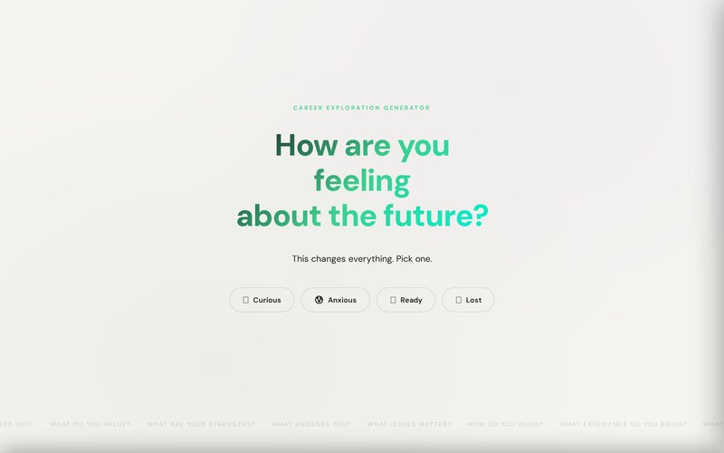
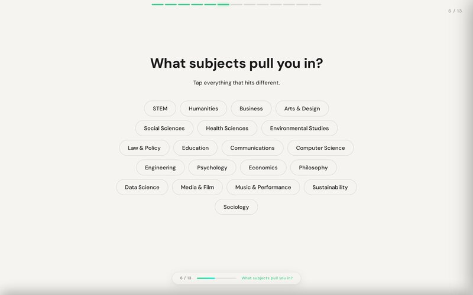
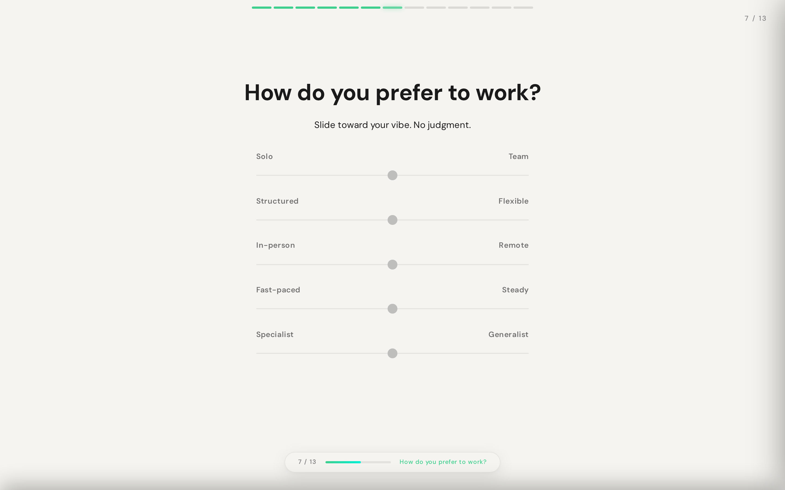
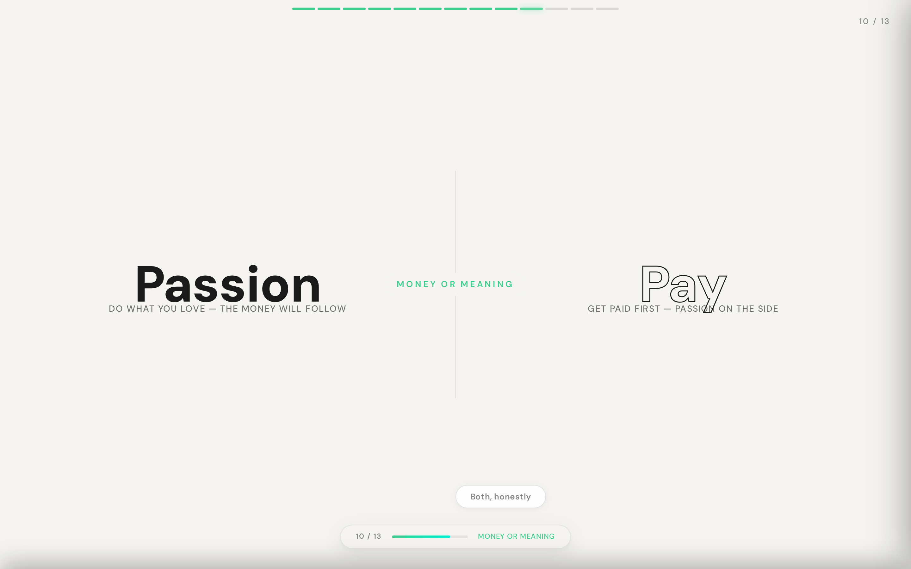
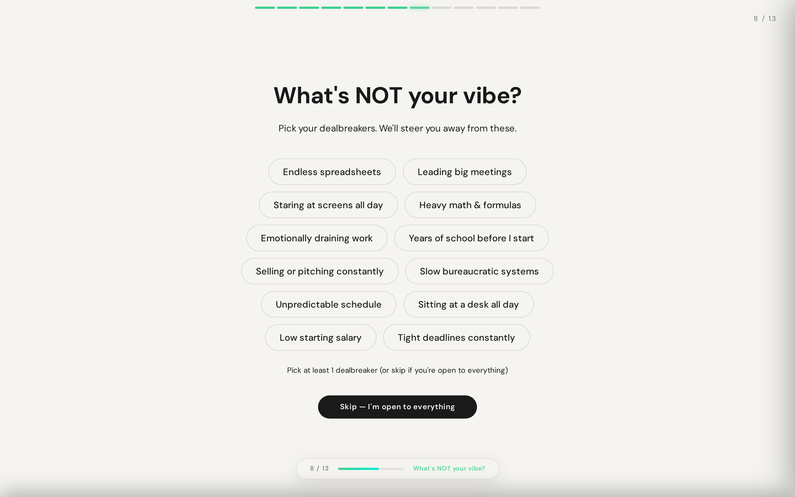
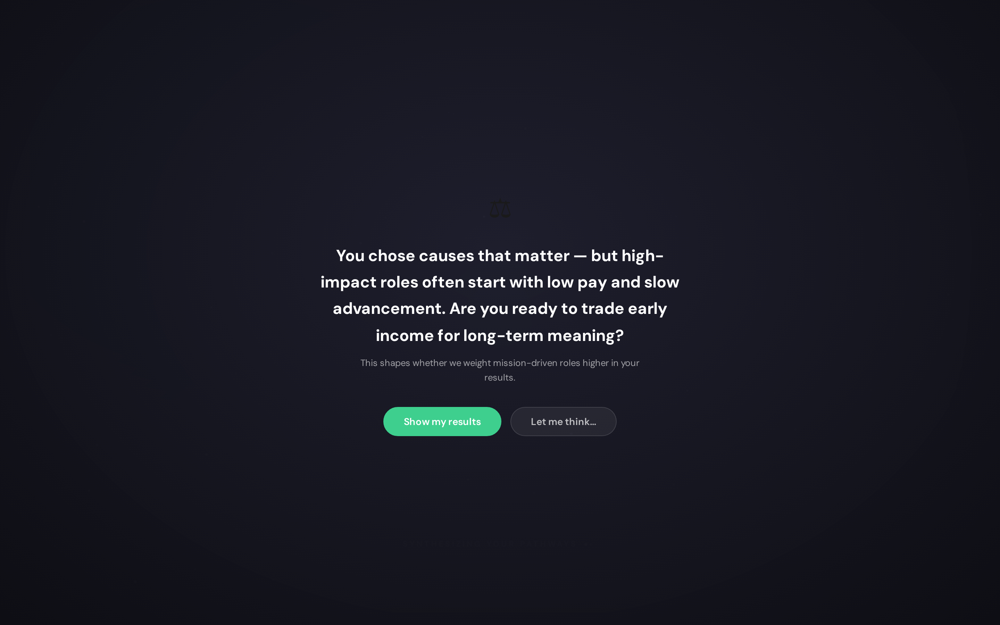

Synapse
- Author
- Seth Looper
- My role
- Founder, lead designer, and sole developer
- Past collaborators
- Lin Liu, Xiaoxi Tan (2025)
- Setting
- Independent tool by the author; used in the Dartmouth Career Design Lab, 2024–2026; no institutional endorsement implied
- Data sources
- U.S. Bureau of Labor Statistics (BLS); O*NET
- Corpus
- 460 occupations, 13 questions
- Live at
- sethlooper.com/synapse
- Period
- 2024–present
- Status
- Active
- Addresses
- RQ 2
- Methods used
- Spatial mapping, Binary elicitation, tag-overlap recommender with diversity rules
What this report argues, how far the evidence currently goes, and what would settle it. Synapse is live but has not been studied; the claims below are design rationale.
Career assessments give you a ranked list. You answer questions, the system spits out occupations sorted by fit score, and you look at the top five. Two problems with that. First, it treats every career as separate. A student interested in urban planning might also connect with public health or environmental policy, but a list doesn't show you those connections. Second, nobody looks past the first few results. The format discourages exploration.

Synapse asks 13 either/or questions about how you think, what energizes you, and what kind of impact you want. Instead of returning a ranked list, it maps your answers against 460 occupations (from BLS and O*NET data) on a visual map. Careers that share characteristics sit near each other. You can wander through clusters of related jobs and find connections that searching or scrolling would likely miss.
Synapse is built on a small number of established frames. Each shaped a specific design decision.
The 13 questions map to Holland's RIASEC dimensions (Holland, 1959; Holland, 1997), the six interest types that organize O*NET's Interest Profiler and the bulk of vocational-assessment infrastructure in U.S. counselor education. The forced-choice format (either/or, not Likert) follows the same tradition's emphasis on producing clear signal at low cost rather than nuanced self-description.
The 460 careers are drawn from the BLS Standard Occupational Classification (SOC) and O*NET 26.0, federal data rather than an editorial selection, so the corpus is the same taxonomy a school counselor or labor economist would work from.
Two non-default moves come from outside the assessment tradition. First, the results page replaces the ranked list with a spatial map. The wayfinding framing comes from Burnett & Evans's Designing Your Life (2016): careers as a landscape to walk through rather than a leaderboard to optimize. (My Maps over lists field note has more on why this pattern keeps showing up across my projects.) Second, the prompts are mood- and values-laden rather than skills- or experience-based. That choice draws on Mark Savickas's Career Construction Theory (Savickas, 2005), which treats career-related decisions as identity construction rather than slot-filling, and on the Knowdell Career Values card-sort tradition that recurs across Lo/Be Lab's other tools (see Narrative by Design).
The full set of cited works is in the working paper.
Synapse is a working product looking for a defensible evidence base. Seven research lines are planned; none has been conducted. Each is framed as what I want to learn and what would change on the site if I learn it.
Two further lines (longitudinal reliability via localStorage snapshots; backfill of prestige-disadvantaged careers like welder, paralegal, and dental hygienist) are in scope but lower priority for the current 90-day cycle.





The first version was a traditional quiz with a ranked list of results. The redesign moved the output to a spatial map because the wayfinding metaphor predicts a different mode of engagement: exploration rather than selection. The question count was reduced from 20 to 13 across design iterations, keeping the set that produced the most distinct profiles in my design review. All career data comes from BLS Occupational Employment and Wage Statistics and O*NET.
Three design-rationale claims the spatial-map move rests on. Each is a hypothesis documented in §5.3 of the working paper; none has been tested.


Synapse is live at sethlooper.com/synapse and was used in the Career Design Lab program at Dartmouth, 2024–2026. Whether spatial exploration improves the quality of downstream decisions compared to list-based tools is one of the open research lines the working paper documents; it would require an IRB-reviewed study, for example with a counselor-education program, to test directly.
Looper, S. (2026a). From Ranked Match to Spatial Map: A Design-Based Inquiry into Career Exploration Interface Affordances. Lo/Be Lab Working Reports, 2026-01. [pdf]
See the full abstract on the publications page.
Material on this site may be cited and reused under CC BY-NC 4.0, with credit to Lo/Be Lab.
For citation requests, collaborations, or pushback on a published claim, seth.looper@gmail.com. Site licensed under CC BY-NC 4.0.